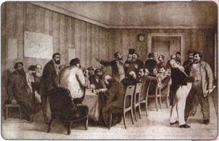
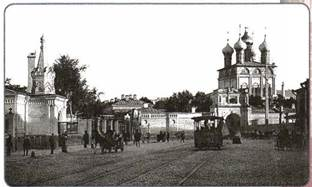
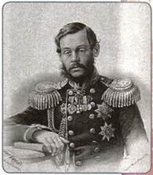
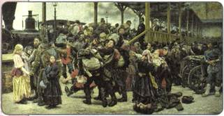
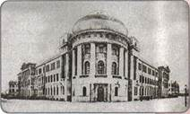

Каким переменам в жизни России способствовали реформы 1860—1870-х гг.?
После отмены крепостного права — главного фундамента государства — потребовалось проведение целого ряда преобразований во всех сферах жизни страны.
1. Земская реформа
К началу 1860-х гг. в стране действовала система управления на местах, основы которой были заложены ещё в конце XVIII—начале XIX в. Руководство губерниями и уездами осуществляли чиновники, назначавшиеся в столице. Остальное население было отстранено от принятия любых решений, касающихся хозяйственной жизни, систем здравоохранения, просвещения и др.
В 1864 г. Александр II подписал «Положение о губернских и уездных земских учреждениях», которое предусматривало создание в уездах и губерниях новых выборных органов управления — земств. Однако выборы были не всеобщими. Женщины к ним не допускались, правом голоса пользовались только мужчины. Также существовал имущественный ценз, избиратели делились на три курии (разряда): землевладельцев, городских избирателей и выборных от крестьянских обществ.
Быть избирателем по землевладельческой курии могли владельцы не менее 200 десятин земли или другого недвижимого имущества на сумму не менее 15 тыс. рублей, а также владельцы промышленных и торговых предприятий, приносящих доход не менее 6 тыс. рублей в год. Мелкие землевладельцы, объединяясь, выдвигали на выборах лишь уполномоченных.
Избирателями городской курии были купцы, владельцы предприятий или торговых заведений с годовым оборотом не менее 6 тыс. рублей, а также владельцы недвижимой собственности на сумму от 600 рублей (в небольших городах) до 3,6 тыс. рублей (в крупных городах).
Выборы по крестьянской курии были многоступенчатыми: сначала сельские сходы выбирали представителей на волостные сходы. На волостных сходах избирали сначала выборщиков, которые затем выдвигали представителей в уездные органы самоуправления. На уездных собраниях избирались представители от крестьян в губернские органы самоуправления.
Земские учреждения делились на распорядительные и исполнительные. Распорядительные органы — земские собрания. Члены земских собраний выбирали исполнительные органы — земские управы. Круг вопросов, которые решали земские учреждения, был ограничен местными делами (строительство и содержание школ, больниц, развитие местной торговли и промышленности и т. д.). За законностью их деятельности следил губернатор. Материальной основой существования земств был специальный налог, которым облагалось недвижимое имущество: земля, дома, фабрично-заводские предприятия и торговые заведения.

Земское собрание. Художник К. А. Трутовский
Несмотря на то что в земствах благодаря сложной системе выборов преобладали представители дворянства, их деятельность была направлена на улучшение положения широких народных масс. Вокруг земств сгруппировалась наиболее энергичная, демократически настроенная интеллигенция. Земства занимались улучшением местной жизни: развитием образования и народного здравоохранения, улучшением дорожной сети, агрономической помощью крестьянам и др.
Земская реформа не проводилась в Архангельской, Астраханской и Оренбургской губерниях, в Сибири, в Средней Азии — там, где дворянское землевладение отсутствовало или было незначительным. Не получили органов местного самоуправления также польские, литовские, белорусские земли, жители Правобережной Украины и Кавказа.
2. Городская реформа
По примеру Земской была проведена и городская реформа. В 1870 г. Александр II подписал «Городовое положение», которое вводило в стране всесословные органы самоуправления — городские думы. Члены дум (их называли «гласные») избирались на четыре года. Они в свою очередь избирали на четыре года исполнительные органы — городские управы, а также выбирали городского голову, который являлся руководителем как думы, так и управы.
Выборы были также не всеобщими. Правом выбора в новые органы управления пользовались мужчины, достигшие возраста 25 лет и платившие городские налоги. Все избиратели делились на три курии в соответствии с величиной уплачиваемых в пользу города сборов. В первую курию входили наиболее крупные владельцы недвижимой собственности, промышленных и торговых предприятий, которые платили в городскую казну 1/8 всех налогов. Во вторую курию входили более мелкие налогоплательщики, вносившие ещё 1/3 городских сборов. Третья курия состояла из всех остальных налогоплательщиков. При этом каждая курия избирала равное число гласных в городскую думу (и это обеспечивало преобладание в ней крупных собственников).
Деятельность городского самоуправления контролировалась государством. Городской голова утверждался губернатором или министром внутренних дел. Эти же чиновники могли наложить запрет на любое решение городской думы. Для контроля за деятельностью городского самоуправления в каждой губернии создавался специальный орган — губернское по городским делам присутствие.

В городе второй половины XIX в.
Городские органы самоуправления появились в 1870 г. сначала в городах центральных российских губерний. В 1874 г. реформа была проведена в городах Закавказья, в 1875 г. — в Литве, Белоруссии и Правобережной Украине, в 1877 г. — в Прибалтике. Она не распространялась на города Средней Азии, Польши и Финляндии.
Несмотря на многие ограничительные моменты, городская реформа, как и Земская, способствовала приобщению широких слоёв населения к решению вопросов управления. Это служило предпосылкой для формирования в России гражданского общества и правового государства.
3. Судебная реформа
Проведённая в 1864 г. Судебная реформа стала самой последовательной из реформ 1860—1870-х гг. Эта реформа была построена на следующих принципах: равенство всех сословий перед законом, гласность суда, независимость судей, состязательность обвинения и защиты, несменяемость судей и следователей, выборность некоторых судебных органов.
Реформа сохранила Сенат как высшую судебную инстанцию. Были созданы три типа судов: мировой суд, окружной суд и судебная палата.
Мировой суд (в составе одного человека — мирового судьи) рассматривал мелкие уголовные и гражданские дела. Мировые суды создавались в городах и уездах. Мировые судьи выбирались уездными земскими собраниями или городскими думами. Для судей устанавливался высокий образовательный и имущественный ценз. При этом они получали довольно высокую заработную плату — от 2,2 до 9 тыс. рублей в год.
Окружной суд (в составе председателя и двух членов) создавался в каждой губернии. Члены окружного суда назначались императором и рассматривали сложные уголовные и гражданские дела. Рассмотрение уголовных дел происходило с участием двенадцати присяжных заседателей. Присяжным мог быть подданный России в возрасте от 25 до 70 лет с безупречной репутацией, проживавший в данной местности не менее двух лет и владевший недвижимостью на сумму от 2 тыс. рублей. Списки присяжных утверждались губернатором.
Судебная палата в составе четырёх членов и трёх сословных представителей (предводитель дворянства, городской голова и волостной старшина) учреждалась одна на несколько губерний. Она рассматривала особо важные уголовные и почти все политические дела, а также апелляции по поводу решения окружного суда, вынесенные без участия присяжных заседателей (приговоры, вынесенные судом присяжных, обжалованию не подлежали).
Реформа устанавливала гласность судебных процессов: судебные заседания проходили открыто, в присутствии публики; отчёты о процессах, представлявших общественный интерес, печатали газеты. Устанавливалась состязательность сторон: на судебном разбирательстве был обязан присутствовать прокурор (представитель обвинения) и адвокат (защитник интересов обвиняемого). В русском обществе возник необычайный интерес к адвокатской деятельности. На этом поприще прославились выдающиеся юристы Ф. Н. Плевако, А. И. Урусов, В. Д. Спасович, К. К. Арсеньев, заложившие основы русской школы адвокатов-ораторов.
Новая судебная система сохраняла ряд сословных пережитков (крестьян судили волостные суды, особые суды предусматривались также для духовенства, военных и высших чиновников).
В некоторых национальных районах претворение в жизнь Судебной реформы затянулось на десятилетия. В так называемом Западном крае её проведение началось только в 1872 г. с создания мировых судов, при этом мировые судьи не избирались, а назначались на три года. Окружные суды здесь были введены лишь в 1877 г., при этом католикам запрещалось занимать судебные должности. В Прибалтике реформа стала претворяться в жизнь только в 1889 г.
Лишь в 1890-е гг. Судебная реформа была проведена в Архангельской губернии и Сибири, а также в Средней Азии и Казахстане. Здесь тоже происходило назначение мировых судей, которые одновременно выполняли функции следователей, не был введён суд присяжных.
4. Военные реформы
О необходимости проведения коренных реформ в армии стало ясно после поражения России в Крымской войне. Разработка реформ проводилась под руководством военного министра Д. А. Милютина.
В 1860-е гг. было предпринято реформирование военно-учебных заведений. Вместо закрытых военных учебных заведений (кадетских корпусов) были созданы военные гимназии. Окончившие их могли продолжать образование в специальных профессиональных учебных заведениях — военных училищах (они подразделялись по родам войск — пехотные, артиллерийские и др.). Высшими военными учебными заведениями были академии (Артиллерийская, Морская, Генерального штаба и др.). Создавались также низшие юнкерские училища, в которые принимали представителей всех сословий.
Важнейшей реформой стало введение в 1874 г. всеобщей воинской повинности. Рекрутская система таким образом была отменена. Отныне армия комплектовалась иначе. Призыву подлежали лица всех сословий, всё мужское население с 20 лет (позднее — с 21 года). Общий срок службы для сухопутных войск устанавливался в 15 лет (из них 6 лет — действительной службы, 9 лет — в запасе). На флоте срок службы составлял 10 лет (7 — действительной, 3 — в запасе). Однако для тех, кто имел образование, срок действительной службы сокращался.
Окончившие начальные училища служили 4 года, а те, кто имел высшее образование, — полгода.
От службы освобождались единственные сыновья и единственные кормильцы семьи. Освобождённые от призыва зачислялись в ополчение, формировавшееся лишь во время войны. Не подлежали призыву духовные лица всех вероисповеданий, представители некоторых религиозных сект и организаций, народы Севера, Средней Азии, часть жителей Кавказа и Сибири.
В армии были отменены телесные наказания (наказание розгами сохранялось только для штрафников), улучшено питание, переоборудованы казармы, вводилось обучение солдат грамоте.

Д. А. Милютин

На войну. Художник К. А. Савицкий
Происходило перевооружение армии и флота: гладкоствольное оружие заменялось нарезным, началась замена чугунных и бронзовых орудий стальными; на вооружение были приняты скорострельные винтовки системы Бердана (берданки), усовершенствованные русскими инженерами. Изменялась система боевой подготовки. Был издан ряд новых уставов, наставлений, учебных пособий, которые ставили задачу учить солдат лишь тому, что необходимо на войне, значительно сократив время на строевую подготовку.
Д. А. Милютин создал централизованную систему организации армии. Отныне страна делилась на военные округа (всего 15), командующие округов подчинялись военному министру. Это упрощало управление армией, повышало возможности мобилизации войск в случае войны.
В результате реформ Россия получила массовую армию, соответствовавшую требованиям времени. Значительно усилилась боеспособность войск.
5. Реформы в области народного просвещения
В 1860—1870-е гг. значительной перестройке подверглась и вся система образования. В 1864 г. было утверждено «Положение, о начальных народных училищах», согласно которому такие учебные заведения могли открывать общественные учреждения и частные лица. Это привело к созданию начальных школ различных типов — государственных, земских, церковно-приходских, воскресных и др. Срок обучения в них не превышал, как правило, трёх лет. Все начальные школы отныне подлежали ведению Министерства народного просвещения (за исключением церковно-приходских школ, остававшихся в ведении Синода).
Средними учебными заведениями с 1864 г. становились гимназии двух типов: классические и реальные. В классических гимназиях большое место отводилось древним языкам — латинскому и греческому. Срок обучения в них составлял 7 лет (с 1871 г. — 8 лет). Выпускники классических гимназий имели возможность поступать в университеты. Этого не могли выпускники реальных гимназий, они изучали более близкие к практической жизни предметы (математика, естествознание и др.) и готовились «к занятиям различными отраслями промышленности и торговли». Срок обучения в реальных гимназиях составлял 6 лет.
Было положено начало женскому среднему образованию — появились женские гимназии. Но по объёму знаний, даваемых в них, они уступали мужским гимназиям. Во все гимназии принимали детей «всех сословий, без различия звания и вероисповедания», правда, при этом устанавливалась высокая плата за обучение.
У дверей школы. Художник Н. П. Богданов-Бельский

Здание высших женских курсов В. И. Герье в Москве
Реформа коснулась и высшего образования. В 1863 г. был утверждён новый устав для университетов, отменивший прежний (1835) и вернувший им самостоятельность в управлении — автономию.
Руководство университетом поручалось совету профессоров, который избирал ректора и деканов, утверждал учебные планы, решал финансовые и кадровые вопросы. В стране на этот момент действовало 7 университетов — в Петербурге, Москве, Казани, Киеве, Харькове, Дерпте (Тарту), Варшаве.
В 1870-е гг. высшее образование в России стало доступным для женщин. Поскольку выпускницы гимназий не имели права поступать в университеты, для них были открыты высшие женские курсы в Москве, Петербурге, Казани, Киеве. Женщин стали допускать и в университеты, но в качестве вольнослушателей. Однако, поскольку образование было платным, получить его могли немногие.
Либеральные реформы затронули и сферу печати. В 1865 г. были изданы «Временные правила о печати», смягчившие цензуру для некоторых видов изданий (для авторских произведений, центральных периодических изданий и др.).
ПОДВЕДЁМ ИТОГИ
В период правления Александра II в России были проведены либеральные реформы, затронувшие все стороны общественной жизни.
Земская и городская реформы сыграли важную положительную роль, заложили основы системы самоуправления. Благодаря реформам первоначальные навыки управления и общественной работы получили значительные слои населения. Реформы закладывали начатки, пусть весьма робкие, гражданского общества и правового государства. Вместе с тем они сохраняли сословные преимущества дворян, а также имели ограничения для национальных районов страны.
Вопросы и задания для работы с текстом параграфа
1. Дайте определение понятию «земство». Назовите главное отличие земств от прежних органов управления на местах. 2. Охарактеризуйте систему выборов, установленную реформой 1864 г. 3. Расскажите о том, как проходило формирование органов управления в городах. 4. Какие принципы были положены в основу Судебной реформы? Как вы думаете, почему именно Судебная реформа стала наиболее последовательным преобразованием эпохи Александра II?
5. Какие ограничения в доступе к образованию устраняла реформа системы просвещения? 6. Перечислите, какие новшества появились в военной сфере в 1860—1870-е гг.
Думаем, сравниваем, размышляем
1. Объясните, почему после отмены крепостного права возникла необходимость проведения других реформ. 2. Систематизируйте материал о реформах, создав в тетради таблицу «Либеральные реформы 1860—1870-х гг.» (необходимо указать название реформы, её основное содержание, значение). 3. Подумайте, почему Земская реформа не затронула многие национальные окраины страны. 4. С какой целью Земская и городская реформы предусматривали имущественный ценз при выборах в органы управления на местах? 5. Какие достоинства и недостатки, на ваш взгляд, имела реформа в области просвещения? 6. Составьте с помощью компьютера схему, в которой отразите систему учебных заведений в России при Александре II. 7. Как связаны Крымская война и проведение Военных реформ в 1860—1870-е гг.? 8. Поразмышляйте, к каким последствиям привело введение всеобщей воинской повинности в Российской империи (рассмотрите как систему обороны страны, так и социальную сферу). 9. Используя Интернет, дополнительную литературу (в том числе художественные произведения авторов XIX в.), соберите информацию о том, как происходило обучение в гимназиях в 1870-е гг.